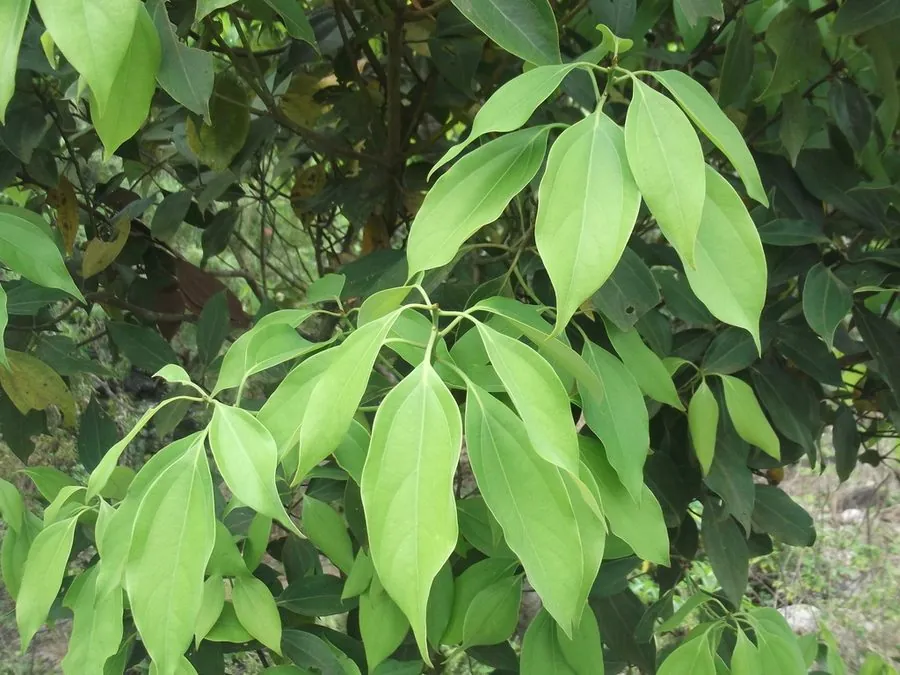

农作物与经济植物 · 植物界
肉桂 Cinnamomum cassia

肉桂是樟科常绿乔木，树皮剥下卷成筒状就是桂皮，香气辛甜，是炖肉、卤味和五香粉常用香料，也可入药。
- 分类
- 门被子植物门纲双子叶植物纲目樟目科樟科属樟属
- 栖息环境
- 亚热带山地与丘陵，喜温暖湿润和酸性土壤
- 地理分布
- 原产中国南方、越南与印度尼西亚，中国广西、广东、福建栽培
- 保护级别
- 暂无评估（栽培作物）
物种志
肉桂是樟科常绿乔木，株高 10–15 m，树皮灰褐色，厚而有芳香，剥皮后需压板定型。叶片长椭圆形，革质，互生，叶面深绿有光泽。花小，黄绿色，圆锥花序。果实为浆果，椭圆形，成熟时紫黑。树皮剥下后卷成筒状，晒干即桂皮。
肉桂原产中国南方、越南和印度尼西亚，中国栽培历史悠久。它喜温暖湿润、光照充足，适宜在酸性红壤生长。树龄较大时树皮更厚、香气更浓。桂皮可作炖肉、卤味、五香粉的香料，也可提取桂皮油；桂枝、桂皮入药。中国广西、广东、福建是主要产区。肉桂喜温暖，幼树期需遮阴保湿，桂皮以皮厚、油性足者为佳，除调味外也常磨成肉桂粉。
形态与习性
- 株高10–15 m，常绿乔木
- 叶长椭圆形，革质
- 果实紫黑色浆果
- 产品树皮卷成桂皮
- 用途炖肉、卤味与桂皮油
- 主要产区广西、广东、福建
趣味知识
- 桂皮就是肉桂树干剥下卷成的树皮。
- 肉桂和桂皮常用于炖肉、卤味和五香粉。
- 肉桂树皮越老越厚，香气也越浓。